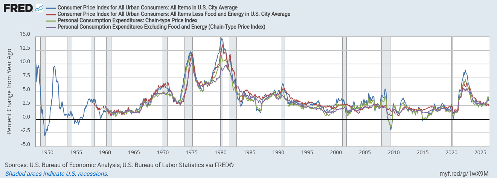
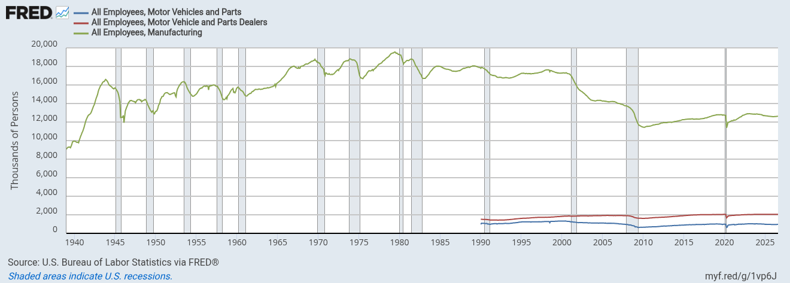
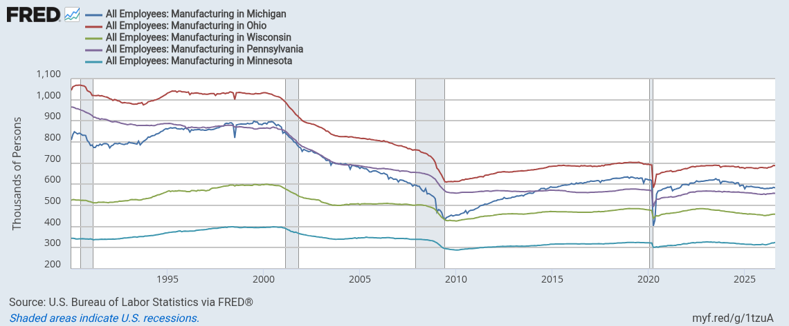
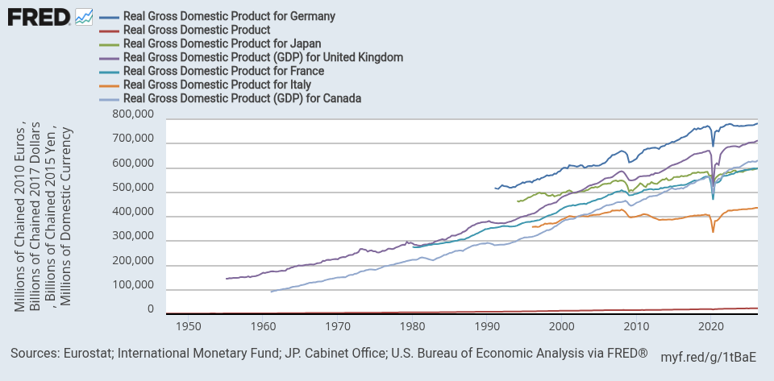

Year-over-year inflation
Open in FRED ↗{kind=link}

U.S. ECONOMY / DATA SNAPSHOT
Jobs, prices, business activity, markets and the federal budget.
LABOR MARKET
The data snapshot could not load. Please reload, or download the workbook below.
SAVED FRED GRAPHS
The original graph settings and transformations are preserved.




WORK WITH THE DATA
Get the current documents or run the scripts to retrieve newer observations.
Download updater scriptsThis is a published snapshot, not a live data feed. Dates in the tables identify the observation month or week. Running the local updater creates new files; the website changes when a new snapshot is published.
Labor data uses published seasonal adjustment. Stock indexes, Treasury budget balances and EIA fuel prices retain their source conventions. Percentage changes and percentage-point differences are labeled separately.
AAA daily prices, the release calendar and three PCE components in the workbook remain marked for manual updates. Missing observations stay unavailable. Source revisions can change past figures.
Sources include BLS, BEA, Census, Treasury, the Department of Labor and FRED. Stock indexes are closing-price indexes, excluding dividends. The chart images retain FRED’s original source attribution.
{kind=link}
{kind=link}
{kind=link}